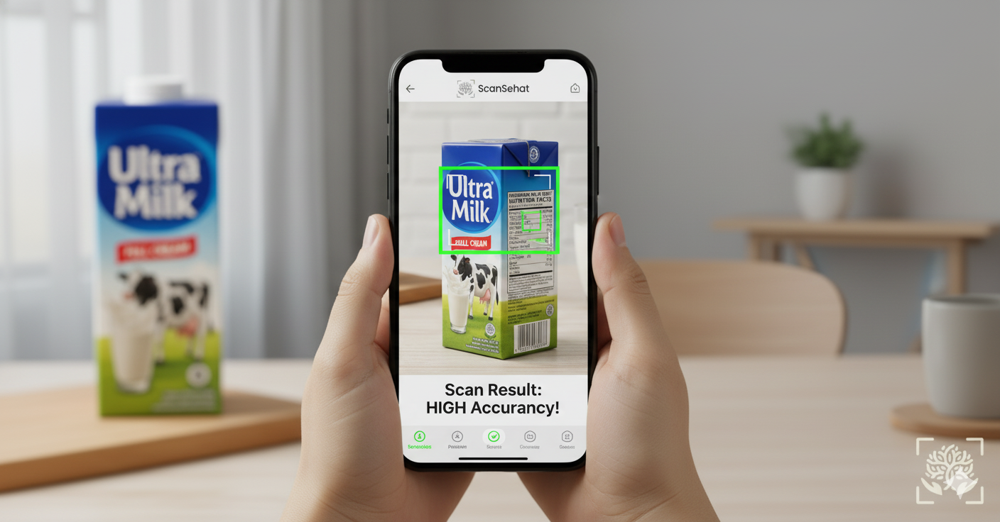

Solusi cerdas untuk menganalisis gizi dari label makanan dan minuman kemasan, disesuaikan dengan kondisi kesehatan setiap anggota keluarga.
ScanSehat hadir sebagai solusi digital inovatif untuk mengatasi rendahnya literasi gizi di Indonesia. Melalui teknologi kecerdasan buatan (Artificial Intelligence) dan pemindaian label gizi otomatis (OCR), ScanSehat mampu mengenali, membaca, dan menjelaskan komposisi makanan dalam bahasa yang mudah dipahami. Sistem ini tidak hanya membaca data tetapi juga memahami Anda. ScanSehat menyesuaikan rekomendasi konsumsi dengan riwayat kesehatan pengguna, membantu setiap individu membuat keputusan makan yang cerdas, aman, dan sesuai kebutuhan medisnya.
Pindai atau unggah label makanan untuk analisis otomatis menggunakan OCR.
Satu akun, banyak profil! Kelola data gizi setiap anggota keluarga dengan mudah.
Diskusikan topik gizi dan temukan wawasan baru bersama pengguna lainnya.
Dapatkan saran konsumsi berdasarkan penyakit, alergi, atau preferensi kesehatanmu.
ScanSehat dirancang untuk seluruh keluarga yang ingin hidup lebih sehat dengan keputusan makan yang lebih cerdas dan berbasis data.
Mengisi data diri Anda seperti tanggal lahir, tinggi badan, berat badan, riwayat penyakit, dan alergi makanan.
Mengisi data akun yang telah dibuat sebelumnya.
Pengguna cukup melakukan scan pada barcode produk ataupun mengunggah gambar produknya.
Sistem akan otomatis menampilkan informasi apakah produk tersebut aman atau tidak sesuai dengan riwayat penyakit.
"ScanSehat sangat membantu saya memilih makanan yang sesuai untuk anak saya yang alergi!"
- Rina, Ibu Rumah TanggaRating: ★★★★★ (5/5)
"Fitur multi-profilnya memudahkan saya memantau asupan gizi seluruh keluarga."
- Budi, Ayah 2 AnakRating: ★★★★★ (5/5)
"Tidak hanya scan tapi bisa juga upload, sangat membantu dalam analisis gizi."
- Sari, MahasiswaRating: ★★★★☆ (4.9/5)
Mulai Gunakan ScanSehat Sekarang!